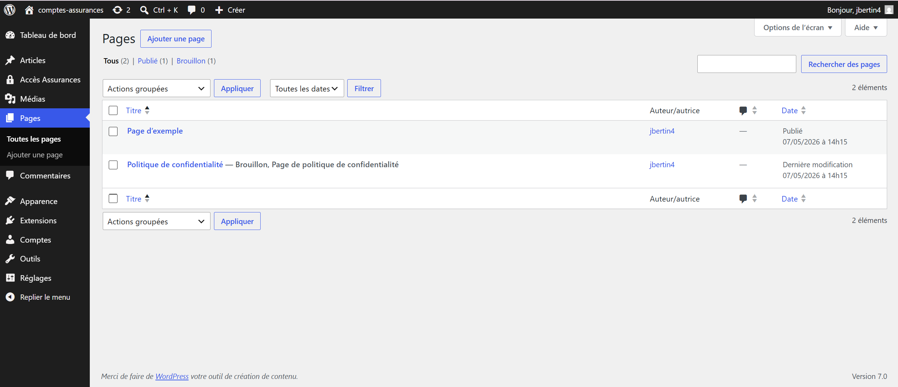
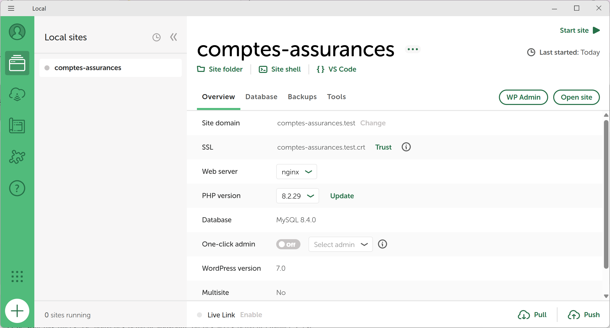

Jolan BERTIN S4A1
jolan.bertin@edu.univ-fcomte.frSavoir-faire techniques
Cette partie permet de présenter et évaluer les savoir-faire techniques employés durant mon stage.
S'auto-former et utiliser sur un nouvel outil : Wordpress

Savoir-faire élémentaire : S'auto-former sur de nouveaux langages et outils .

Trace 11 : Interface WordpressBien que connu pour être simple d'usage et accessible pour les non-développeurs, WordPress reste un outil à part avec ses spécificités à connaitre, prendre en main et auxquels nous devons nous adapter.
Puisque MyWork utilise WordPress pour créer et héberger les différents sites qu'elle développe, j'ai été amené utiliser cet outil. Je me suis donc formé, ai testé et mis en place des changements sur des sites Wordpress hébergés par MyWork . Pour des raison de confidentialité, la trace 11 montre une interface de base WordPress qui n'est pas celle de l'entreprise mais une vide que j'ai créé.
Sur le panneau de gauche de la trace 11, se trouvent les différents onglets présents de base dans WordPress. Cependant, ce ne sont que les composants de base et suivant les besoins, une grande quantité d'extensions existent. C'est dans ce contexte que j'ai du utiliser cet outil pour la première fois pour apporter des modification à un site déjà existant avec ses nombreuses pages.

Trace 12 : Interface Local by FlywheelEn plus de Wordpress en lui même, et afin d'intégrer mon application PHP/MySQL à cet hébegeur, j'ai été amené à utiliser un autre nouvel outil : Local by FlyWheel (dont la trace 12 est l'interface).
Local est un simulateur d'environnement WordPress en local, modifiant la structure et m'obligeant à paramettrer les différentes variables WordPress pour que mon application s'execute correctement.
Local m'a permit d'intégrer la base de données directement dans WordPress (en renommant mes différentes tables car certains nom son déjà utilisés par WordPress), via l'onglet Database de la trace 12, que je n'ai pas montré car les accès y sont affichés en clair.
Toutefois, lors du passage de mon site PHP/MySQL sur l'hébergeur WordPress, le projet comptes-assurances que j'ai créé avec Local va me permettre d'éviter les mauvaises surprises et de devoir trop modifier mon code, car les syntaxes propores à WordPress sont biens par interprétés par Local.